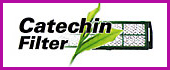

| Фильтр Auto Cleaning Robot Пыль автоматически извлекается из фильтра Auto Cleaning и удаляется на улицу при каждом использовании. Мощность кондиционера с чистым фильтром постоянна. |
| Фильтр SUPER alleru-buster Инновационная система SUPER alleru-buster в кондиционерах Panasonic создает надежный заслон для различных угроз здоровью. Она не только улавливает вредные элементы, но и нейтрализует их. SUPER alleru-buster сочетает три функции, каждая из которых устраняет определенный негативный компонент - аллергены, вирусы и бактерии, делая воздух здоровым и чистым. |
| Система ультразвуковой очистки воздуха Ультразвуковая система Supersonic Air Purifying позволяет в два раза быстрее очистить воздух от пыли и других загрязнений. Специальный генератор, встроенный во внутренний блок кондиционера, создает ультразвуковые волны. Под их воздействием пыль слепляется и образует более крупные частицы, которые легко задерживаются фильтром. |
| Ионизатор воздуха Насыщает воздух отрицательными аэроионами. Чтобы воздух в доме стал свежим и бодрящим, генерируется около 20 000 отрицательных ионов на куб.см. Это позволяет чувствовать себя так, как будто находишься у водопада или в лесу. |
 | Система очистки воздуха Активные ионы E-ion с датчиком Сенсор Патруль Инновационная система очистки воздуха, механизм улавливает частицы пыли и притягивает их обратно к поверхности фильтра, используя датчик Сенсор Патруль для контроля загрязненности воздуха. |
 | Светящийся (фосфоресцирующий) пульт Светящиеся кнопки позволяют легче найти и использовать пульт дистанционного управления даже в полной темноте.
|
|  | Катехиновый фильтр Новый катехиновый фильтр не только абсорбирует мелкие частицы пыли, табачный дым и другие обычные загрязнители воздуха, но также улавливает и дезактивирует микроскопические вирусы и бактерии. |
 | Дезодорирующий фильтр тонкой очистки с солнечной регенерацией Для поглощения запахов используется комбинация трех катализаторов. Их тройное действие очищает воздух от целого ряда веществ, вызывающих неприятный запах: от частиц табачного дыма до химических паров.
Под воздействием солнечного света фильтр восстанавливает свой дезодорирующий эффект. |
 | Новый хладагент R410a Хладагент R410a не разрушает озоновый слой Земли |
| Фильтр с солнечной регенерацией Угольный дезодорирующий фильтр Solar Refreshing System поглощает табачный дым, подшерсток животных и другие загрязнители воздуха. |
| Blue Fin — новый теплообменник Panasonic Это оригинальное покрытие не только обеспечит много лет надежной работы Вашего кондиционера, но и в результате приведет к дополнительной экономии средств. |